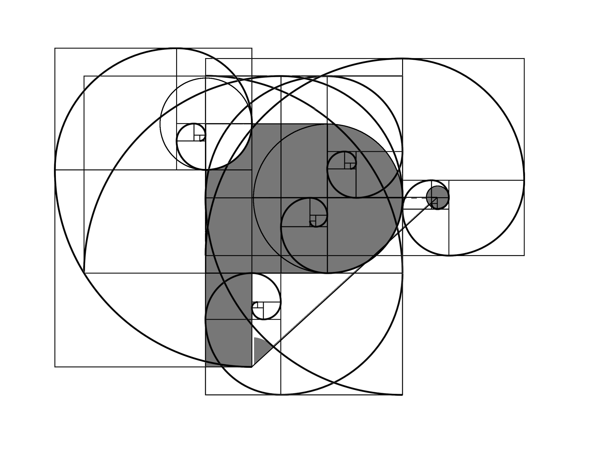

『P』
構想中の物理eラーニングサイト"P"のロゴデザインです。Pの由来は二つあって、一つ目は中学数学でおなじみ「動く点P」です。力学の勉強をしているとき教科書の挿し絵部分がハリーポッターの新聞のように動いたらどんなに分かりやすいだろうか、という思いからこのサイトの作成に着手しました。もう一つは「Physics」の頭文字を取っており、これは僕の書いた教科書が物理を勉強するすべての人のはじめの一歩をサポートできるものになってほしいという願いが込められています。本当はAdobeのIllustratorを使ってパスで描くべきなんですがこの画像はGIMPで作りました。作成途中はこんな感じ...

ファビコン用にアレンジもしてみました。
点の部分はマウスでドラッグできるようになっていて、描画にはp5.js、裏で動いている物理エンジンにはmatter.jsを使っています。絶賛工事中で下手すると404エラーになっている日なんかもあるかもしれませんが(笑)一応サイトは
こちらです。
使ったもの...
- GIMP
- p5.js
- matter.js
- jQuery

▼説明を表示